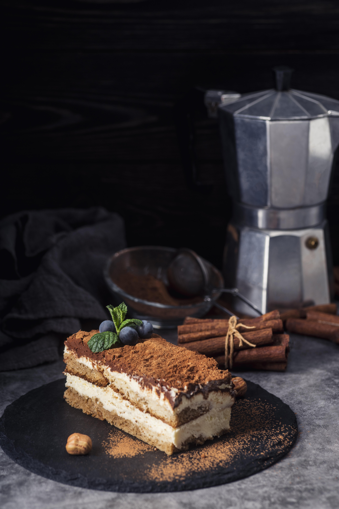

Tiramisu

Image by freepik
Description
For this recipe you will need to combine espresso and some rum.
Combine the mascarpone cheese and the remaining rum separately.
Make the custard. Combine the custard and mascarpone, chill. Make whipped
cream and combine with the chilled mascarpone mixture. Then we prepare ladyfingers
by dipping them in the espresso mixture. And all that's left is to layer the
ladyfingers and mascarpone, dust with coca powder, and chill!
Ingredients
- Espresso
- Dark rum
- Mascarpone
- Zabaglione
- Sugar
- Cream
- Vanilla extract
- Ladyfingers
- Cocoa powder
Steps
- Combine espresso and dark rum in a medium bowl.
- To a large bowl, add the mascarpone cheese along with the remaining rum. Whisk together or beat with a
hand mixer. Set aside for now.
- Make the custard (you’re basically making a zabaglione here). If you have a double-boiler, combine the
egg yolks and granulated sugar in the top. If not, whisk them together in a heat-proof medium mixing bowl.
Place the bowl over a pot of simmering water, ensuring that the bowl doesn’t touch the water. Continue to
whisk until the sugar has dissolved. Once the egg yolk mixture is pale yellow and thickened, it is ready.
This will take 5 to 8 minutes.
- Pour the egg yolk mixture into the mascarpone and whisk until combined. Refrigerate for 15 minutes.
- Combine the heavy cream and vanilla in a large mixing with an electric mixer or the bowl of a stand mixer
fitted with the whisk attachment. Beat on medium until stiff peaks form (3 to 5 minutes). Keep an eye on
the cream as if it is over-beaten, it will turn into butter! Fold the whipped cream into the cold
mascarpone mixture.
- Prepare the ladyfingers by dipping each side briefly into the espresso and rum mixture. Each side only
needs to be dipped for a second or two, otherwise, the cookies will absorb too much liquid and become
soggy. Arrange the lady fingers in a single layer in a 9×13-inch dish. You may need to break one row of
ladyfingers so they fit. Try not to leave any gaps.
- Add half the mascarpone mixture on top of the ladyfingers and smooth it out using a spatula. Dip more
ladyfingers in the espresso mixture and arrange them in a layer on top of the mascarpone cream layer.
- Spoon the rest of the mascarpone mixture on top of the second layer of ladyfingers and smooth it out. So
you will end up with a layer of ladyfingers at the bottom, then a layer of mascarpone cream, then another
layer of cookies, and one more layer of mascarpone cream. Dust the tiramisu recipe generously with
unsweetened cocoa powder and chill overnight. Allowing your tiramisu time to set will give you neat
layers and make slicing it much easier.
Recipe from Preppy Kitchen
Home